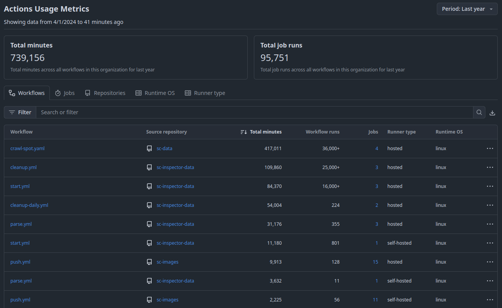
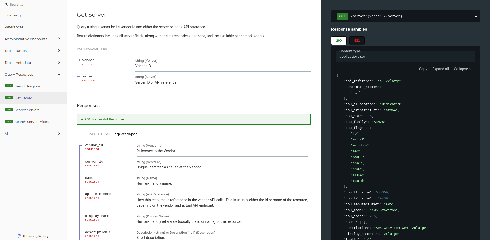
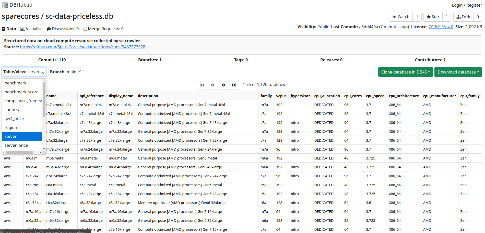

Benchmarking 2000+ Cloud Servers for GBM Model Training and LLM Inference Speed
2025-09-01
Benchmarking 2000+ Cloud Servers for
GBM Model Training and LLM Inference Speed
Gergely Daroczi, Spare Cores
Sep 1, 2025 @ PyData Berlin 2025
Slides: sparecores.com/talks
Press Space or click the green arrow icons to navigate the slides ->
>>> from sparecores import badges
- Funded by NGI Search (EU consortium under Horizon Europe)
- Vendor independent, open-source project
- Accepted into the NVIDIA Inception Program
- Beneficiary of cloud credits from 5 vendors (overall ~$100k)
- 10+ conference talks in 6 countries (e.g. Berlin Buzzwords, KCD)
- Featured by The Pragmatic Engineer in Oct 2024
- Jeff Barr (Chief Evangelist at AWS) on our Reddit post:
This was awesome, thanks for sharing.
>>> from sparecores import intro
- Open-source tools, database schemas and documentation to inspect and inventory cloud vendors and their offerings, including pricing and measured performance.
- Managed infrastructure, databases, APIs, SDKs, and web applications to make this data publicly accessible.
- Open-source helpers to select, start and manage instances in your own environment.
- Open-source Python/R packages and workflow orchestration extensions (e.g. Metaflow) to track resource usage and cost of DS/ML/AI jobs. Open-source tooling to right-size instances.
- Add-on services to scale data science workflows, even without direct vendor engagement.
>>> from sparecores import navigator

Source: sparecores.com
>>> from sparecores import navigator

>>> from navigator.www import search

>>> from navigator.www import server

>>> from navigator.www import server

>>> from navigator.www import server

>>> from navigator.www import server

>>> from navigator.www import server

>>> from navigator.www import server

>>> from navigator.www import server
>>> from navigator.www import server

>>> from navigator.www import servers

>>> from navigator.www import servers

>>> from navigator import api

>>> from navigator import data
>>> from rich import print as pp
>>> from sc_crawler.tables import Server
>>> from sqlmodel import create_engine, Session, select
>>> engine = create_engine("sqlite:///sc-data-all.db")
>>> session = Session(engine)
>>> server = session.exec(select(Server).where(Server.server_id == 'g4dn.xlarge')).one()
>>> pp(server)
Server(
server_id='g4dn.xlarge',
vendor_id='aws',
display_name='g4dn.xlarge',
api_reference='g4dn.xlarge',
name='g4dn.xlarge',
family='g4dn',
description='Graphics intensive [Instance store volumes] [Network and EBS optimized] Gen4 xlarge',
status=<Status.ACTIVE: 'active'>,
observed_at=datetime.datetime(2024, 6, 6, 10, 18, 4, 127254),
hypervisor='nitro',
vcpus=4,
cpu_cores=2,
cpu_allocation=<CpuAllocation.DEDICATED: 'Dedicated'>,
cpu_manufacturer='Intel',
cpu_family='Xeon',
cpu_model='8259CL',
cpu_architecture=<CpuArchitecture.X86_64: 'x86_64'>,
cpu_speed=3.5,
cpu_l1_cache=None,
cpu_l2_cache=None,
cpu_l3_cache=None,
cpu_flags=[],
memory_amount=16384,
memory_generation=<DdrGeneration.DDR4: 'DDR4'>,
memory_speed=3200,
memory_ecc=None,
gpu_count=1,
gpu_memory_min=16384,
gpu_memory_total=16384,
gpu_manufacturer='Nvidia',
gpu_family='Turing',
gpu_model='Tesla T4',
gpus=[
{
'manufacturer': 'Nvidia',
'family': 'Turing',
'model': 'Tesla T4',
'memory': 15360,
'firmware_version': '535.171.04',
'bios_version': '90.04.96.00.A0',
'graphics_clock': 1590,
'sm_clock': 1590,
'mem_clock': 5001,
'video_clock': 1470
}
],
storage_size=125,
storage_type=<StorageType.NVME_SSD: 'nvme ssd'>,
storages=[{'size': 125, 'storage_type': 'nvme ssd'}],
network_speed=5.0,
inbound_traffic=0.0,
outbound_traffic=0.0,
ipv4=0,
)>>> from navigator export sqlite

>>> sparecores.navigator.__dir__()

>>> from sc_inspector import llm

>>> from sc_inspector import llm
$ docker build -t llm-benchmark .
- Multi-arch Docker build with x86 and ARM support.
-
Bundles
llama.cppbinaries built for various CPU architectures and CUDA as well. - Recursive lookup of linked libraries from multiple parent images and mixing them in a single image under different paths ü´£
- Python script to run the benchmark:
-
Hardware discovery to pick the correct binary,
$PATHoverrides. - Download models in a background thread, sequentially from Hugging Face with sane timeouts.
-
Find optimal
nglsetting for each model when GPU is available. - Run the benchmarks in sequence with sane timeouts.
>>> from bencmark-llm import models
| Model | Parameters | File Size |
|---|---|---|
| SmolLM-135M.Q4_K_M.gguf | 135M | 100MB |
| qwen1_5-0_5b-chat-q4_k_m.gguf | 500M | 400MB |
| gemma-2b.Q4_K_M.gguf | 2B | 1.5GB |
| llama-7b.Q4_K_M.gguf | 7B | 4GB |
| phi-4-q4.gguf | 14B | 9GB |
| Llama-3.3-70B-Instruct-Q4_K_M.gguf | 70B | 42GB |
>>> from bencmark-llm import workloads
- Prompt processing
| Token length | Expected TPS |
|---|---|
| 16 | 2 |
| 128 | 10 |
| 512 | 25 |
| 1,024 | 50 |
| 4,096 | 250 |
| 16,384 | 1,000 |
- Text generation
| Token length | Expected TPS |
|---|---|
| 16 | 1 |
| 128 | 5 |
| 512 | 25 |
| 1,024 | 50 |
| 4,096 | 250 |
Timeout: model load into memory (250 MB/s) + 5 iterations with expected TPS + 1s overhead
>>> from bencmark-llm import example
2025-04-16 13:41:53,991 - INFO - Using CPU-build of llama.cpp
load_backend: loaded CPU backend from ./libggml-cpu-haswell.so
2025-04-16 13:41:54,017 - INFO - Benchmarking model SmolLM-135M.Q4_K_M.gguf ...
2025-04-16 13:41:54,019 - DEBUG - Downloading model SmolLM-135M.Q4_K_M.gguf from https://huggingface.co/QuantFactory/SmolLM-135M-GGUF/resolve/main/SmolLM-135M.Q4_K_M.gguf
2025-04-16 13:41:54,401 - DEBUG - Downloaded model SmolLM-135M.Q4_K_M.gguf (100.57 MB) in 0.38 sec (264.17 MB/s)
2025-04-16 13:41:54,403 - DEBUG - Downloading model qwen1_5-0_5b-chat-q4_k_m.gguf from https://huggingface.co/Qwen/Qwen1.5-0.5B-Chat-GGUF/resolve/main/qwen1_5-0_5b-chat-q4_k_m.gguf
2025-04-16 13:41:54,404 - DEBUG - Model SmolLM-135M.Q4_K_M.gguf found at /models/SmolLM-135M.Q4_K_M.gguf (0.10 GB)
2025-04-16 13:41:54,404 - DEBUG - Using ngl 0 for model SmolLM-135M.Q4_K_M.gguf
2025-04-16 13:41:54,404 - DEBUG - Benchmarking prompt processing with 16 tokens for max 41 sec
2025-04-16 13:41:54,773 - DEBUG - Benchmarking prompt processing with 128 tokens for max 65 sec
2025-04-16 13:41:56,499 - DEBUG - Benchmarking prompt processing with 512 tokens for max 104 sec
2025-04-16 13:42:03,289 - DEBUG - Benchmarking prompt processing with 1024 tokens for max 104 sec
2025-04-16 13:42:03,637 - DEBUG - Downloaded model qwen1_5-0_5b-chat-q4_k_m.gguf (388.29 MB) in 9.23 sec (42.05 MB/s)
2025-04-16 13:42:03,684 - DEBUG - Downloading model gemma-2b.Q4_K_M.gguf from https://huggingface.co/mlabonne/gemma-2b-GGUF/resolve/main/gemma-2b.Q4_K_M.gguf
2025-04-16 13:42:20,270 - DEBUG - Benchmarking prompt processing with 4096 tokens for max 83 sec
2025-04-16 13:42:54,763 - DEBUG - Downloaded model gemma-2b.Q4_K_M.gguf (1425.83 MB) in 51.08 sec (27.91 MB/s)
2025-04-16 13:42:54,860 - DEBUG - Downloading model llama-7b.Q4_K_M.gguf from https://huggingface.co/TheBloke/LLaMA-7b-GGUF/resolve/main/llama-7b.Q4_K_M.gguf
2025-04-16 13:43:43,279 - ERROR - Error: Command '['./llama-bench', '-t', '4', '-sm', 'layer', '-fa', '1', '-ub', '512', '-b', '2048', '-o', 'jsonl', '-m', '/models/SmolLM-135M.Q4_K_M.gguf', '-ngl', '0', '-p', '4096', '-n', '0']' timed out after 82.99997042499999 seconds
2025-04-16 13:43:43,279 - INFO - Skipping prompt processing benchmarks with 4096+ tokens due to time constraints.
2025-04-16 13:43:43,279 - DEBUG - Benchmarking text generation with 16 tokens for max 81 sec
2025-04-16 13:43:43,997 - DEBUG - Benchmarking text generation with 128 tokens for max 129 sec
2025-04-16 13:43:47,728 - DEBUG - Benchmarking text generation with 512 tokens for max 104 sec
2025-04-16 13:44:04,864 - DEBUG - Benchmarking text generation with 1024 tokens for max 104 sec
2025-04-16 13:44:45,497 - ERROR - Skipping text generation benchmarks with 1024+ tokens as it's unlikely to hit the expected 250 tokens/sec.
2025-04-16 13:44:45,497 - INFO - Benchmarking model qwen1_5-0_5b-chat-q4_k_m.gguf ...
2025-04-16 13:44:45,501 - DEBUG - Model qwen1_5-0_5b-chat-q4_k_m.gguf found at /models/qwen1_5-0_5b-chat-q4_k_m.gguf (0.38 GB)
2025-04-16 13:44:45,501 - DEBUG - Using ngl 0 for model qwen1_5-0_5b-chat-q4_k_m.gguf
2025-04-16 13:44:45,501 - DEBUG - Benchmarking prompt processing with 16 tokens for max 43 sec
2025-04-16 13:44:47,523 - DEBUG - Benchmarking prompt processing with 128 tokens for max 67 sec
2025-04-16 13:44:48,115 - DEBUG - Downloaded model llama-7b.Q4_K_M.gguf (3891.95 MB) in 113.23 sec (34.37 MB/s)
2025-04-16 13:44:48,167 - DEBUG - Downloading model phi-4-q4.gguf from https://huggingface.co/microsoft/phi-4-gguf/resolve/main/phi-4-q4.gguf
2025-04-16 13:44:51,206 - DEBUG - Benchmarking prompt processing with 512 tokens for max 105 sec
2025-04-16 13:45:05,527 - DEBUG - Benchmarking prompt processing with 1024 tokens for max 105 sec
2025-04-16 13:45:38,910 - ERROR - Skipping prompt processing benchmarks with 1024+ tokens as it's unlikely to hit the expected 250 tokens/sec.
2025-04-16 13:45:38,911 - DEBUG - Benchmarking text generation with 16 tokens for max 83 sec
2025-04-16 13:45:40,231 - DEBUG - Benchmarking text generation with 128 tokens for max 131 sec
2025-04-16 13:45:48,681 - DEBUG - Benchmarking text generation with 512 tokens for max 105 sec
2025-04-16 13:46:25,599 - DEBUG - Benchmarking text generation with 1024 tokens for max 105 sec
2025-04-16 13:47:58,761 - ERROR - Skipping text generation benchmarks with 1024+ tokens as it's unlikely to hit the expected 250 tokens/sec.
2025-04-16 13:47:58,761 - INFO - Benchmarking model gemma-2b.Q4_K_M.gguf ...
2025-04-16 13:47:58,765 - DEBUG - Model gemma-2b.Q4_K_M.gguf found at /models/gemma-2b.Q4_K_M.gguf (1.39 GB)
2025-04-16 13:47:58,765 - DEBUG - Using ngl 0 for model gemma-2b.Q4_K_M.gguf
2025-04-16 13:47:58,765 - DEBUG - Benchmarking prompt processing with 16 tokens for max 47 sec
2025-04-16 13:48:02,795 - DEBUG - Benchmarking prompt processing with 128 tokens for max 71 sec
2025-04-16 13:48:18,069 - DEBUG - Benchmarking prompt processing with 512 tokens for max 109 sec
2025-04-16 13:49:18,691 - DEBUG - Benchmarking prompt processing with 1024 tokens for max 109 sec
2025-04-16 13:51:07,724 - ERROR - Error: Command '['./llama-bench', '-t', '4', '-sm', 'layer', '-fa', '1', '-ub', '512', '-b', '2048', '-o', 'jsonl', '-m', '/models/gemma-2b.Q4_K_M.gguf', '-ngl', '0', '-p', '1024', '-n', '0']' timed out after 108.99997727900006 seconds
2025-04-16 13:51:07,724 - INFO - Skipping prompt processing benchmarks with 1024+ tokens due to time constraints.
2025-04-16 13:51:07,724 - DEBUG - Benchmarking text generation with 16 tokens for max 87 sec
2025-04-16 13:51:11,557 - DEBUG - Benchmarking text generation with 128 tokens for max 135 sec
2025-04-16 13:51:36,713 - DEBUG - Benchmarking text generation with 512 tokens for max 109 sec
2025-04-16 13:52:31,657 - DEBUG - Downloaded model phi-4-q4.gguf (8633.72 MB) in 463.27 sec (18.64 MB/s)
2025-04-16 13:52:31,783 - DEBUG - Downloading model Llama-3.3-70B-Instruct-Q4_K_M.gguf from https://huggingface.co/unsloth/Llama-3.3-70B-Instruct-GGUF/resolve/main/Llama-3.3-70B-Instruct-Q4_K_M.gguf
2025-04-16 13:53:17,342 - DEBUG - Benchmarking text generation with 1024 tokens for max 109 sec
2025-04-16 13:55:06,375 - ERROR - Error: Command '['./llama-bench', '-t', '4', '-sm', 'layer', '-fa', '1', '-ub', '512', '-b', '2048', '-o', 'jsonl', '-m', '/models/gemma-2b.Q4_K_M.gguf', '-ngl', '0', '-n', '1024', '-p', '0']' timed out after 108.99998397000002 seconds
2025-04-16 13:55:06,375 - INFO - Skipping text generation benchmarks with 1024+ tokens due to time constraints.
2025-04-16 13:55:06,375 - INFO - Benchmarking model llama-7b.Q4_K_M.gguf ...
2025-04-16 13:55:06,378 - DEBUG - Model llama-7b.Q4_K_M.gguf found at /models/llama-7b.Q4_K_M.gguf (3.80 GB)
2025-04-16 13:55:06,378 - DEBUG - Using ngl 0 for model llama-7b.Q4_K_M.gguf
2025-04-16 13:55:06,378 - DEBUG - Benchmarking prompt processing with 16 tokens for max 56 sec
2025-04-16 13:55:17,076 - DEBUG - Benchmarking prompt processing with 128 tokens for max 80 sec
2025-04-16 13:56:05,012 - DEBUG - Benchmarking prompt processing with 512 tokens for max 119 sec
2025-04-16 13:58:04,139 - ERROR - Error: Command '['./llama-bench', '-t', '4', '-sm', 'layer', '-fa', '1', '-ub', '512', '-b', '2048', '-o', 'jsonl', '-m', '/models/llama-7b.Q4_K_M.gguf', '-ngl', '0', '-p', '512', '-n', '0']' timed out after 118.99998227699996 seconds
2025-04-16 13:58:04,140 - INFO - Skipping prompt processing benchmarks with 512+ tokens due to time constraints.
2025-04-16 13:58:04,140 - DEBUG - Benchmarking text generation with 16 tokens for max 96 sec
2025-04-16 13:58:13,091 - DEBUG - Benchmarking text generation with 128 tokens for max 144 sec
2025-04-16 13:59:20,008 - DEBUG - Benchmarking text generation with 512 tokens for max 119 sec
2025-04-16 14:01:19,103 - ERROR - Error: Command '['./llama-bench', '-t', '4', '-sm', 'layer', '-fa', '1', '-ub', '512', '-b', '2048', '-o', 'jsonl', '-m', '/models/llama-7b.Q4_K_M.gguf', '-ngl', '0', '-n', '512', '-p', '0']' timed out after 118.99996960299995 seconds
2025-04-16 14:01:19,103 - INFO - Skipping text generation benchmarks with 512+ tokens due to time constraints.
2025-04-16 14:01:19,103 - INFO - Benchmarking model phi-4-q4.gguf ...
2025-04-16 14:01:19,108 - DEBUG - Model phi-4-q4.gguf found at /models/phi-4-q4.gguf (8.43 GB)
2025-04-16 14:01:19,108 - DEBUG - Using ngl 0 for model phi-4-q4.gguf
2025-04-16 14:01:19,108 - DEBUG - Benchmarking prompt processing with 16 tokens for max 75 sec
2025-04-16 14:02:22,300 - DEBUG - Benchmarking prompt processing with 128 tokens for max 99 sec
2025-04-16 14:04:01,479 - ERROR - Error: Command '['./llama-bench', '-t', '4', '-sm', 'layer', '-fa', '1', '-ub', '512', '-b', '2048', '-o', 'jsonl', '-m', '/models/phi-4-q4.gguf', '-ngl', '0', '-p', '128', '-n', '0']' timed out after 98.99997493299998 seconds
2025-04-16 14:04:01,490 - INFO - Skipping prompt processing benchmarks with 128+ tokens due to time constraints.
2025-04-16 14:04:01,491 - DEBUG - Benchmarking text generation with 16 tokens for max 115 sec
2025-04-16 14:05:56,724 - ERROR - Error: Command '['./llama-bench', '-t', '4', '-sm', 'layer', '-fa', '1', '-ub', '512', '-b', '2048', '-o', 'jsonl', '-m', '/models/phi-4-q4.gguf', '-ngl', '0', '-n', '16', '-p', '0']' timed out after 114.99991323800009 seconds
2025-04-16 14:05:56,729 - INFO - Benchmarking failed with simplest task, so skipping larger models.
2025-04-16 14:05:56,732 - INFO - Received interrupt signal, cleaning up...
2025-04-16 14:05:56,734 - DEBUG - Deleted partially downloaded model file: Llama-3.3-70B-Instruct-Q4_K_M.gguf.partSource: https://github.com/SpareCores/sc-inspector-data/blob/main/data/hcloud/cpx31/llm/stderr
>>> from bencmark-llm import example
{"build_commit": "51f311e0", "build_number": 4753, "cpu_info": "AMD EPYC-Rome Processor", "gpu_info": "", "backends": "CPU", "model_filename": "/models/SmolLM-135M.Q4_K_M.gguf", "model_type": "llama ?B Q4_K - Medium", "model_size": 103668480, "model_n_params": 134515008, "n_batch": 2048, "n_ubatch": 512, "n_threads": 4, "cpu_mask": "0x0", "cpu_strict": false, "poll": 50, "type_k": "f16", "type_v": "f16", "n_gpu_layers": 0, "split_mode": "layer", "main_gpu": 0, "no_kv_offload": false, "flash_attn": true, "tensor_split": "0.00", "use_mmap": true, "embeddings": false, "n_prompt": 16, "n_gen": 0, "test_time": "2025-04-16T13:41:54Z", "avg_ns": 29425803, "stddev_ns": 2633928, "avg_ts": 547.524574, "stddev_ts": 52.956226, "samples_ns": [ 31321572, 31803362, 29934339, 25189353, 28880389 ],"samples_ts": [ 510.83, 503.091, 534.503, 635.189, 554.009 ]}
{"build_commit": "51f311e0", "build_number": 4753, "cpu_info": "AMD EPYC-Rome Processor", "gpu_info": "", "backends": "CPU", "model_filename": "/models/SmolLM-135M.Q4_K_M.gguf", "model_type": "llama ?B Q4_K - Medium", "model_size": 103668480, "model_n_params": 134515008, "n_batch": 2048, "n_ubatch": 512, "n_threads": 4, "cpu_mask": "0x0", "cpu_strict": false, "poll": 50, "type_k": "f16", "type_v": "f16", "n_gpu_layers": 0, "split_mode": "layer", "main_gpu": 0, "no_kv_offload": false, "flash_attn": true, "tensor_split": "0.00", "use_mmap": true, "embeddings": false, "n_prompt": 128, "n_gen": 0, "test_time": "2025-04-16T13:41:54Z", "avg_ns": 233632645, "stddev_ns": 9120854, "avg_ts": 548.527531, "stddev_ts": 21.101188, "samples_ns": [ 240395549, 227846673, 224613694, 246016255, 229291056 ],"samples_ts": [ 532.456, 561.781, 569.867, 520.291, 558.242 ]}
{"build_commit": "51f311e0", "build_number": 4753, "cpu_info": "AMD EPYC-Rome Processor", "gpu_info": "", "backends": "CPU", "model_filename": "/models/SmolLM-135M.Q4_K_M.gguf", "model_type": "llama ?B Q4_K - Medium", "model_size": 103668480, "model_n_params": 134515008, "n_batch": 2048, "n_ubatch": 512, "n_threads": 4, "cpu_mask": "0x0", "cpu_strict": false, "poll": 50, "type_k": "f16", "type_v": "f16", "n_gpu_layers": 0, "split_mode": "layer", "main_gpu": 0, "no_kv_offload": false, "flash_attn": true, "tensor_split": "0.00", "use_mmap": true, "embeddings": false, "n_prompt": 512, "n_gen": 0, "test_time": "2025-04-16T13:41:56Z", "avg_ns": 1107877439, "stddev_ns": 34935205, "avg_ts": 462.513620, "stddev_ts": 14.616548, "samples_ns": [ 1127364831, 1064661879, 1081647591, 1114166670, 1151546228 ],"samples_ts": [ 454.156, 480.904, 473.352, 459.536, 444.62 ]}
{"build_commit": "51f311e0", "build_number": 4753, "cpu_info": "AMD EPYC-Rome Processor", "gpu_info": "", "backends": "CPU", "model_filename": "/models/SmolLM-135M.Q4_K_M.gguf", "model_type": "llama ?B Q4_K - Medium", "model_size": 103668480, "model_n_params": 134515008, "n_batch": 2048, "n_ubatch": 512, "n_threads": 4, "cpu_mask": "0x0", "cpu_strict": false, "poll": 50, "type_k": "f16", "type_v": "f16", "n_gpu_layers": 0, "split_mode": "layer", "main_gpu": 0, "no_kv_offload": false, "flash_attn": true, "tensor_split": "0.00", "use_mmap": true, "embeddings": false, "n_prompt": 1024, "n_gen": 0, "test_time": "2025-04-16T13:42:03Z", "avg_ns": 2735385583, "stddev_ns": 125973030, "avg_ts": 374.988808, "stddev_ts": 17.260522, "samples_ns": [ 2832889408, 2740268018, 2604040465, 2615189266, 2884540762 ],"samples_ts": [ 361.468, 373.686, 393.235, 391.559, 354.996 ]}
{"build_commit": "51f311e0", "build_number": 4753, "cpu_info": "AMD EPYC-Rome Processor", "gpu_info": "", "backends": "CPU", "model_filename": "/models/SmolLM-135M.Q4_K_M.gguf", "model_type": "llama ?B Q4_K - Medium", "model_size": 103668480, "model_n_params": 134515008, "n_batch": 2048, "n_ubatch": 512, "n_threads": 4, "cpu_mask": "0x0", "cpu_strict": false, "poll": 50, "type_k": "f16", "type_v": "f16", "n_gpu_layers": 0, "split_mode": "layer", "main_gpu": 0, "no_kv_offload": false, "flash_attn": true, "tensor_split": "0.00", "use_mmap": true, "embeddings": false, "n_prompt": 0, "n_gen": 16, "test_time": "2025-04-16T13:43:43Z", "avg_ns": 87002061, "stddev_ns": 6566828, "avg_ts": 184.729581, "stddev_ts": 13.687935, "samples_ns": [ 92503974, 95323826, 80012676, 84203122, 82966710 ],"samples_ts": [ 172.966, 167.849, 199.968, 190.017, 192.848 ]}
{"build_commit": "51f311e0", "build_number": 4753, "cpu_info": "AMD EPYC-Rome Processor", "gpu_info": "", "backends": "CPU", "model_filename": "/models/SmolLM-135M.Q4_K_M.gguf", "model_type": "llama ?B Q4_K - Medium", "model_size": 103668480, "model_n_params": 134515008, "n_batch": 2048, "n_ubatch": 512, "n_threads": 4, "cpu_mask": "0x0", "cpu_strict": false, "poll": 50, "type_k": "f16", "type_v": "f16", "n_gpu_layers": 0, "split_mode": "layer", "main_gpu": 0, "no_kv_offload": false, "flash_attn": true, "tensor_split": "0.00", "use_mmap": true, "embeddings": false, "n_prompt": 0, "n_gen": 128, "test_time": "2025-04-16T13:43:44Z", "avg_ns": 690783893, "stddev_ns": 8557061, "avg_ts": 185.319590, "stddev_ts": 2.306403, "samples_ns": [ 698437313, 689595912, 678290911, 688381890, 699213443 ],"samples_ts": [ 183.266, 185.616, 188.71, 185.943, 183.063 ]}
{"build_commit": "51f311e0", "build_number": 4753, "cpu_info": "AMD EPYC-Rome Processor", "gpu_info": "", "backends": "CPU", "model_filename": "/models/SmolLM-135M.Q4_K_M.gguf", "model_type": "llama ?B Q4_K - Medium", "model_size": 103668480, "model_n_params": 134515008, "n_batch": 2048, "n_ubatch": 512, "n_threads": 4, "cpu_mask": "0x0", "cpu_strict": false, "poll": 50, "type_k": "f16", "type_v": "f16", "n_gpu_layers": 0, "split_mode": "layer", "main_gpu": 0, "no_kv_offload": false, "flash_attn": true, "tensor_split": "0.00", "use_mmap": true, "embeddings": false, "n_prompt": 0, "n_gen": 512, "test_time": "2025-04-16T13:43:47Z", "avg_ns": 3370098262, "stddev_ns": 97732646, "avg_ts": 152.023246, "stddev_ts": 4.263015, "samples_ns": [ 3326730840, 3297454249, 3357141922, 3328364047, 3540800254 ],"samples_ts": [ 153.905, 155.271, 152.511, 153.829, 144.6 ]}
{"build_commit": "51f311e0", "build_number": 4753, "cpu_info": "AMD EPYC-Rome Processor", "gpu_info": "", "backends": "CPU", "model_filename": "/models/SmolLM-135M.Q4_K_M.gguf", "model_type": "llama ?B Q4_K - Medium", "model_size": 103668480, "model_n_params": 134515008, "n_batch": 2048, "n_ubatch": 512, "n_threads": 4, "cpu_mask": "0x0", "cpu_strict": false, "poll": 50, "type_k": "f16", "type_v": "f16", "n_gpu_layers": 0, "split_mode": "layer", "main_gpu": 0, "no_kv_offload": false, "flash_attn": true, "tensor_split": "0.00", "use_mmap": true, "embeddings": false, "n_prompt": 0, "n_gen": 1024, "test_time": "2025-04-16T13:44:04Z", "avg_ns": 8001929540, "stddev_ns": 262150259, "avg_ts": 128.079991, "stddev_ts": 4.231092, "samples_ns": [ 8287642141, 8221401731, 7906358169, 7635775657, 7958470003 ],"samples_ts": [ 123.557, 124.553, 129.516, 134.106, 128.668 ]}
{"build_commit": "51f311e0", "build_number": 4753, "cpu_info": "AMD EPYC-Rome Processor", "gpu_info": "", "backends": "CPU", "model_filename": "/models/qwen1_5-0_5b-chat-q4_k_m.gguf", "model_type": "qwen2 0.5B Q4_K - Medium", "model_size": 401210368, "model_n_params": 619570176, "n_batch": 2048, "n_ubatch": 512, "n_threads": 4, "cpu_mask": "0x0", "cpu_strict": false, "poll": 50, "type_k": "f16", "type_v": "f16", "n_gpu_layers": 0, "split_mode": "layer", "main_gpu": 0, "no_kv_offload": false, "flash_attn": true, "tensor_split": "0.00", "use_mmap": true, "embeddings": false, "n_prompt": 16, "n_gen": 0, "test_time": "2025-04-16T13:44:46Z", "avg_ns": 67276867, "stddev_ns": 1251593, "avg_ts": 237.888581, "stddev_ts": 4.393434, "samples_ns": [ 66863667, 66620213, 67924660, 69093364, 65882433 ],"samples_ts": [ 239.293, 240.167, 235.555, 231.571, 242.857 ]}
{"build_commit": "51f311e0", "build_number": 4753, "cpu_info": "AMD EPYC-Rome Processor", "gpu_info": "", "backends": "CPU", "model_filename": "/models/qwen1_5-0_5b-chat-q4_k_m.gguf", "model_type": "qwen2 0.5B Q4_K - Medium", "model_size": 401210368, "model_n_params": 619570176, "n_batch": 2048, "n_ubatch": 512, "n_threads": 4, "cpu_mask": "0x0", "cpu_strict": false, "poll": 50, "type_k": "f16", "type_v": "f16", "n_gpu_layers": 0, "split_mode": "layer", "main_gpu": 0, "no_kv_offload": false, "flash_attn": true, "tensor_split": "0.00", "use_mmap": true, "embeddings": false, "n_prompt": 128, "n_gen": 0, "test_time": "2025-04-16T13:44:47Z", "avg_ns": 511944655, "stddev_ns": 5021439, "avg_ts": 250.046093, "stddev_ts": 2.429916, "samples_ns": [ 520395778, 511979406, 509989116, 507215609, 510143370 ],"samples_ts": [ 245.967, 250.01, 250.986, 252.358, 250.91 ]}
{"build_commit": "51f311e0", "build_number": 4753, "cpu_info": "AMD EPYC-Rome Processor", "gpu_info": "", "backends": "CPU", "model_filename": "/models/qwen1_5-0_5b-chat-q4_k_m.gguf", "model_type": "qwen2 0.5B Q4_K - Medium", "model_size": 401210368, "model_n_params": 619570176, "n_batch": 2048, "n_ubatch": 512, "n_threads": 4, "cpu_mask": "0x0", "cpu_strict": false, "poll": 50, "type_k": "f16", "type_v": "f16", "n_gpu_layers": 0, "split_mode": "layer", "main_gpu": 0, "no_kv_offload": false, "flash_attn": true, "tensor_split": "0.00", "use_mmap": true, "embeddings": false, "n_prompt": 512, "n_gen": 0, "test_time": "2025-04-16T13:44:51Z", "avg_ns": 2303963981, "stddev_ns": 45209596, "avg_ts": 222.294383, "stddev_ts": 4.376013, "samples_ns": [ 2359587656, 2328058309, 2312741678, 2275658058, 2243774208 ],"samples_ts": [ 216.987, 219.926, 221.382, 224.99, 228.187 ]}
{"build_commit": "51f311e0", "build_number": 4753, "cpu_info": "AMD EPYC-Rome Processor", "gpu_info": "", "backends": "CPU", "model_filename": "/models/qwen1_5-0_5b-chat-q4_k_m.gguf", "model_type": "qwen2 0.5B Q4_K - Medium", "model_size": 401210368, "model_n_params": 619570176, "n_batch": 2048, "n_ubatch": 512, "n_threads": 4, "cpu_mask": "0x0", "cpu_strict": false, "poll": 50, "type_k": "f16", "type_v": "f16", "n_gpu_layers": 0, "split_mode": "layer", "main_gpu": 0, "no_kv_offload": false, "flash_attn": true, "tensor_split": "0.00", "use_mmap": true, "embeddings": false, "n_prompt": 1024, "n_gen": 0, "test_time": "2025-04-16T13:45:05Z", "avg_ns": 5487183417, "stddev_ns": 37689507, "avg_ts": 186.623698, "stddev_ts": 1.275571, "samples_ns": [ 5449746916, 5474790612, 5547228579, 5497393560, 5466757421 ],"samples_ts": [ 187.899, 187.039, 184.597, 186.27, 187.314 ]}
{"build_commit": "51f311e0", "build_number": 4753, "cpu_info": "AMD EPYC-Rome Processor", "gpu_info": "", "backends": "CPU", "model_filename": "/models/qwen1_5-0_5b-chat-q4_k_m.gguf", "model_type": "qwen2 0.5B Q4_K - Medium", "model_size": 401210368, "model_n_params": 619570176, "n_batch": 2048, "n_ubatch": 512, "n_threads": 4, "cpu_mask": "0x0", "cpu_strict": false, "poll": 50, "type_k": "f16", "type_v": "f16", "n_gpu_layers": 0, "split_mode": "layer", "main_gpu": 0, "no_kv_offload": false, "flash_attn": true, "tensor_split": "0.00", "use_mmap": true, "embeddings": false, "n_prompt": 0, "n_gen": 16, "test_time": "2025-04-16T13:45:39Z", "avg_ns": 175408498, "stddev_ns": 3296649, "avg_ts": 91.241421, "stddev_ts": 1.714235, "samples_ns": [ 177546108, 179614622, 175199022, 171256868, 173425870 ],"samples_ts": [ 90.1174, 89.0796, 91.3247, 93.4269, 92.2584 ]}
{"build_commit": "51f311e0", "build_number": 4753, "cpu_info": "AMD EPYC-Rome Processor", "gpu_info": "", "backends": "CPU", "model_filename": "/models/qwen1_5-0_5b-chat-q4_k_m.gguf", "model_type": "qwen2 0.5B Q4_K - Medium", "model_size": 401210368, "model_n_params": 619570176, "n_batch": 2048, "n_ubatch": 512, "n_threads": 4, "cpu_mask": "0x0", "cpu_strict": false, "poll": 50, "type_k": "f16", "type_v": "f16", "n_gpu_layers": 0, "split_mode": "layer", "main_gpu": 0, "no_kv_offload": false, "flash_attn": true, "tensor_split": "0.00", "use_mmap": true, "embeddings": false, "n_prompt": 0, "n_gen": 128, "test_time": "2025-04-16T13:45:40Z", "avg_ns": 1549490379, "stddev_ns": 30772494, "avg_ts": 82.633558, "stddev_ts": 1.621123, "samples_ns": [ 1540490469, 1555864331, 1515722193, 1598212797, 1537162108 ],"samples_ts": [ 83.0904, 82.2694, 84.4482, 80.0895, 83.2703 ]}
{"build_commit": "51f311e0", "build_number": 4753, "cpu_info": "AMD EPYC-Rome Processor", "gpu_info": "", "backends": "CPU", "model_filename": "/models/qwen1_5-0_5b-chat-q4_k_m.gguf", "model_type": "qwen2 0.5B Q4_K - Medium", "model_size": 401210368, "model_n_params": 619570176, "n_batch": 2048, "n_ubatch": 512, "n_threads": 4, "cpu_mask": "0x0", "cpu_strict": false, "poll": 50, "type_k": "f16", "type_v": "f16", "n_gpu_layers": 0, "split_mode": "layer", "main_gpu": 0, "no_kv_offload": false, "flash_attn": true, "tensor_split": "0.00", "use_mmap": true, "embeddings": false, "n_prompt": 0, "n_gen": 512, "test_time": "2025-04-16T13:45:48Z", "avg_ns": 7304242594, "stddev_ns": 60524587, "avg_ts": 70.100115, "stddev_ts": 0.583384, "samples_ns": [ 7209987783, 7310762724, 7376312174, 7326387204, 7297763087 ],"samples_ts": [ 71.0126, 70.0337, 69.4114, 69.8844, 70.1585 ]}
{"build_commit": "51f311e0", "build_number": 4753, "cpu_info": "AMD EPYC-Rome Processor", "gpu_info": "", "backends": "CPU", "model_filename": "/models/qwen1_5-0_5b-chat-q4_k_m.gguf", "model_type": "qwen2 0.5B Q4_K - Medium", "model_size": 401210368, "model_n_params": 619570176, "n_batch": 2048, "n_ubatch": 512, "n_threads": 4, "cpu_mask": "0x0", "cpu_strict": false, "poll": 50, "type_k": "f16", "type_v": "f16", "n_gpu_layers": 0, "split_mode": "layer", "main_gpu": 0, "no_kv_offload": false, "flash_attn": true, "tensor_split": "0.00", "use_mmap": true, "embeddings": false, "n_prompt": 0, "n_gen": 1024, "test_time": "2025-04-16T13:46:25Z", "avg_ns": 18507470660, "stddev_ns": 622845912, "avg_ts": 55.380380, "stddev_ts": 1.908991, "samples_ns": [ 17506323616, 18690681024, 19216102218, 18499857045, 18624389398 ],"samples_ts": [ 58.4931, 54.7867, 53.2886, 55.3518, 54.9817 ]}
{"build_commit": "51f311e0", "build_number": 4753, "cpu_info": "AMD EPYC-Rome Processor", "gpu_info": "", "backends": "CPU", "model_filename": "/models/gemma-2b.Q4_K_M.gguf", "model_type": "gemma 2B Q4_K - Medium", "model_size": 1489055744, "model_n_params": 2506172416, "n_batch": 2048, "n_ubatch": 512, "n_threads": 4, "cpu_mask": "0x0", "cpu_strict": false, "poll": 50, "type_k": "f16", "type_v": "f16", "n_gpu_layers": 0, "split_mode": "layer", "main_gpu": 0, "no_kv_offload": false, "flash_attn": true, "tensor_split": "0.00", "use_mmap": true, "embeddings": false, "n_prompt": 16, "n_gen": 0, "test_time": "2025-04-16T13:48:00Z", "avg_ns": 320691221, "stddev_ns": 6013047, "avg_ts": 49.906014, "stddev_ts": 0.919069, "samples_ns": [ 319556305, 330864550, 317777341, 320138415, 315119497 ],"samples_ts": [ 50.0694, 48.3582, 50.3497, 49.9784, 50.7744 ]}
{"build_commit": "51f311e0", "build_number": 4753, "cpu_info": "AMD EPYC-Rome Processor", "gpu_info": "", "backends": "CPU", "model_filename": "/models/gemma-2b.Q4_K_M.gguf", "model_type": "gemma 2B Q4_K - Medium", "model_size": 1489055744, "model_n_params": 2506172416, "n_batch": 2048, "n_ubatch": 512, "n_threads": 4, "cpu_mask": "0x0", "cpu_strict": false, "poll": 50, "type_k": "f16", "type_v": "f16", "n_gpu_layers": 0, "split_mode": "layer", "main_gpu": 0, "no_kv_offload": false, "flash_attn": true, "tensor_split": "0.00", "use_mmap": true, "embeddings": false, "n_prompt": 128, "n_gen": 0, "test_time": "2025-04-16T13:48:03Z", "avg_ns": 2461361005, "stddev_ns": 59088511, "avg_ts": 52.027430, "stddev_ts": 1.233112, "samples_ns": [ 2545829132, 2501576257, 2415216417, 2422378521, 2421804702 ],"samples_ts": [ 50.2783, 51.1677, 52.9973, 52.8406, 52.8531 ]}
{"build_commit": "51f311e0", "build_number": 4753, "cpu_info": "AMD EPYC-Rome Processor", "gpu_info": "", "backends": "CPU", "model_filename": "/models/gemma-2b.Q4_K_M.gguf", "model_type": "gemma 2B Q4_K - Medium", "model_size": 1489055744, "model_n_params": 2506172416, "n_batch": 2048, "n_ubatch": 512, "n_threads": 4, "cpu_mask": "0x0", "cpu_strict": false, "poll": 50, "type_k": "f16", "type_v": "f16", "n_gpu_layers": 0, "split_mode": "layer", "main_gpu": 0, "no_kv_offload": false, "flash_attn": true, "tensor_split": "0.00", "use_mmap": true, "embeddings": false, "n_prompt": 512, "n_gen": 0, "test_time": "2025-04-16T13:48:18Z", "avg_ns": 10036688731, "stddev_ns": 118930086, "avg_ts": 51.018583, "stddev_ts": 0.605756, "samples_ns": [ 9885559022, 9944975140, 10086923750, 10179108474, 10086877272 ],"samples_ts": [ 51.7927, 51.4833, 50.7588, 50.2991, 50.759 ]}
{"build_commit": "51f311e0", "build_number": 4753, "cpu_info": "AMD EPYC-Rome Processor", "gpu_info": "", "backends": "CPU", "model_filename": "/models/gemma-2b.Q4_K_M.gguf", "model_type": "gemma 2B Q4_K - Medium", "model_size": 1489055744, "model_n_params": 2506172416, "n_batch": 2048, "n_ubatch": 512, "n_threads": 4, "cpu_mask": "0x0", "cpu_strict": false, "poll": 50, "type_k": "f16", "type_v": "f16", "n_gpu_layers": 0, "split_mode": "layer", "main_gpu": 0, "no_kv_offload": false, "flash_attn": true, "tensor_split": "0.00", "use_mmap": true, "embeddings": false, "n_prompt": 0, "n_gen": 16, "test_time": "2025-04-16T13:51:08Z", "avg_ns": 625071993, "stddev_ns": 24333484, "avg_ts": 25.627274, "stddev_ts": 0.970688, "samples_ns": [ 663217000, 635181545, 609708673, 612766256, 604486494 ],"samples_ts": [ 24.1248, 25.1896, 26.242, 26.1111, 26.4687 ]}
{"build_commit": "51f311e0", "build_number": 4753, "cpu_info": "AMD EPYC-Rome Processor", "gpu_info": "", "backends": "CPU", "model_filename": "/models/gemma-2b.Q4_K_M.gguf", "model_type": "gemma 2B Q4_K - Medium", "model_size": 1489055744, "model_n_params": 2506172416, "n_batch": 2048, "n_ubatch": 512, "n_threads": 4, "cpu_mask": "0x0", "cpu_strict": false, "poll": 50, "type_k": "f16", "type_v": "f16", "n_gpu_layers": 0, "split_mode": "layer", "main_gpu": 0, "no_kv_offload": false, "flash_attn": true, "tensor_split": "0.00", "use_mmap": true, "embeddings": false, "n_prompt": 0, "n_gen": 128, "test_time": "2025-04-16T13:51:11Z", "avg_ns": 4923532121, "stddev_ns": 111396914, "avg_ts": 26.008117, "stddev_ts": 0.581379, "samples_ns": [ 4940674596, 5097103357, 4800498462, 4919597333, 4859786860 ],"samples_ts": [ 25.9074, 25.1123, 26.6639, 26.0184, 26.3386 ]}
{"build_commit": "51f311e0", "build_number": 4753, "cpu_info": "AMD EPYC-Rome Processor", "gpu_info": "", "backends": "CPU", "model_filename": "/models/gemma-2b.Q4_K_M.gguf", "model_type": "gemma 2B Q4_K - Medium", "model_size": 1489055744, "model_n_params": 2506172416, "n_batch": 2048, "n_ubatch": 512, "n_threads": 4, "cpu_mask": "0x0", "cpu_strict": false, "poll": 50, "type_k": "f16", "type_v": "f16", "n_gpu_layers": 0, "split_mode": "layer", "main_gpu": 0, "no_kv_offload": false, "flash_attn": true, "tensor_split": "0.00", "use_mmap": true, "embeddings": false, "n_prompt": 0, "n_gen": 512, "test_time": "2025-04-16T13:51:37Z", "avg_ns": 19952116080, "stddev_ns": 430963946, "avg_ts": 25.671116, "stddev_ts": 0.560122, "samples_ns": [ 20445111740, 19800455920, 19305439257, 20182460909, 20027112575 ],"samples_ts": [ 25.0427, 25.858, 26.521, 25.3686, 25.5653 ]}
{"build_commit": "51f311e0", "build_number": 4753, "cpu_info": "AMD EPYC-Rome Processor", "gpu_info": "", "backends": "CPU", "model_filename": "/models/llama-7b.Q4_K_M.gguf", "model_type": "llama 7B Q4_K - Medium", "model_size": 4080263168, "model_n_params": 6738415616, "n_batch": 2048, "n_ubatch": 512, "n_threads": 4, "cpu_mask": "0x0", "cpu_strict": false, "poll": 50, "type_k": "f16", "type_v": "f16", "n_gpu_layers": 0, "split_mode": "layer", "main_gpu": 0, "no_kv_offload": false, "flash_attn": true, "tensor_split": "0.00", "use_mmap": true, "embeddings": false, "n_prompt": 16, "n_gen": 0, "test_time": "2025-04-16T13:55:10Z", "avg_ns": 994448946, "stddev_ns": 13778245, "avg_ts": 16.091779, "stddev_ts": 0.222546, "samples_ns": [ 990369161, 977862789, 987192172, 1011953542, 1004867069 ],"samples_ts": [ 16.1556, 16.3622, 16.2076, 15.811, 15.9225 ]}
{"build_commit": "51f311e0", "build_number": 4753, "cpu_info": "AMD EPYC-Rome Processor", "gpu_info": "", "backends": "CPU", "model_filename": "/models/llama-7b.Q4_K_M.gguf", "model_type": "llama 7B Q4_K - Medium", "model_size": 4080263168, "model_n_params": 6738415616, "n_batch": 2048, "n_ubatch": 512, "n_threads": 4, "cpu_mask": "0x0", "cpu_strict": false, "poll": 50, "type_k": "f16", "type_v": "f16", "n_gpu_layers": 0, "split_mode": "layer", "main_gpu": 0, "no_kv_offload": false, "flash_attn": true, "tensor_split": "0.00", "use_mmap": true, "embeddings": false, "n_prompt": 128, "n_gen": 0, "test_time": "2025-04-16T13:55:17Z", "avg_ns": 7939737769, "stddev_ns": 19317778, "avg_ts": 16.121515, "stddev_ts": 0.039163, "samples_ns": [ 7925913791, 7924160621, 7968858935, 7929611024, 7950144478 ],"samples_ts": [ 16.1496, 16.1531, 16.0625, 16.142, 16.1003 ]}
{"build_commit": "51f311e0", "build_number": 4753, "cpu_info": "AMD EPYC-Rome Processor", "gpu_info": "", "backends": "CPU", "model_filename": "/models/llama-7b.Q4_K_M.gguf", "model_type": "llama 7B Q4_K - Medium", "model_size": 4080263168, "model_n_params": 6738415616, "n_batch": 2048, "n_ubatch": 512, "n_threads": 4, "cpu_mask": "0x0", "cpu_strict": false, "poll": 50, "type_k": "f16", "type_v": "f16", "n_gpu_layers": 0, "split_mode": "layer", "main_gpu": 0, "no_kv_offload": false, "flash_attn": true, "tensor_split": "0.00", "use_mmap": true, "embeddings": false, "n_prompt": 0, "n_gen": 16, "test_time": "2025-04-16T13:58:04Z", "avg_ns": 1672142392, "stddev_ns": 33119213, "avg_ts": 9.571578, "stddev_ts": 0.190255, "samples_ns": [ 1680191447, 1699128019, 1640933001, 1634083066, 1706376430 ],"samples_ts": [ 9.52272, 9.41659, 9.75055, 9.79142, 9.37659 ]}
{"build_commit": "51f311e0", "build_number": 4753, "cpu_info": "AMD EPYC-Rome Processor", "gpu_info": "", "backends": "CPU", "model_filename": "/models/llama-7b.Q4_K_M.gguf", "model_type": "llama 7B Q4_K - Medium", "model_size": 4080263168, "model_n_params": 6738415616, "n_batch": 2048, "n_ubatch": 512, "n_threads": 4, "cpu_mask": "0x0", "cpu_strict": false, "poll": 50, "type_k": "f16", "type_v": "f16", "n_gpu_layers": 0, "split_mode": "layer", "main_gpu": 0, "no_kv_offload": false, "flash_attn": true, "tensor_split": "0.00", "use_mmap": true, "embeddings": false, "n_prompt": 0, "n_gen": 128, "test_time": "2025-04-16T13:58:13Z", "avg_ns": 13262760196, "stddev_ns": 301316448, "avg_ts": 9.655080, "stddev_ts": 0.219917, "samples_ns": [ 12869155074, 13097432097, 13595745046, 13524903313, 13226565452 ],"samples_ts": [ 9.94626, 9.77291, 9.41471, 9.46402, 9.67749 ]}
{"build_commit": "51f311e0", "build_number": 4753, "cpu_info": "AMD EPYC-Rome Processor", "gpu_info": "", "backends": "CPU", "model_filename": "/models/phi-4-q4.gguf", "model_type": "phi3 14B Q4_K - Medium", "model_size": 9049559040, "model_n_params": 14659507200, "n_batch": 2048, "n_ubatch": 512, "n_threads": 4, "cpu_mask": "0x0", "cpu_strict": false, "poll": 50, "type_k": "f16", "type_v": "f16", "n_gpu_layers": 0, "split_mode": "layer", "main_gpu": 0, "no_kv_offload": false, "flash_attn": true, "tensor_split": "0.00", "use_mmap": true, "embeddings": false, "n_prompt": 16, "n_gen": 0, "test_time": "2025-04-16T14:01:28Z", "avg_ns": 8871663562, "stddev_ns": 517599918, "avg_ts": 1.808353, "stddev_ts": 0.104175, "samples_ns": [ 9091521129, 9598508214, 8334751597, 8914518010, 8419018861 ],"samples_ts": [ 1.75988, 1.66693, 1.91967, 1.79483, 1.90046 ]}Source: https://github.com/SpareCores/sc-inspector-data/blob/main/data/hcloud/cpx31/llm/stdout
>>> from bencmark-llm import example
>>> from bencmarks import count
$ benchmark_config=$(jq -nc \
--arg version "51f311e0" \
--arg model "SmolLM-135M.Q4_K_M.gguf" \
--argjson tokens 16 \
'{framework_version: $version, model: $model, tokens: $tokens}')
$ curl -s -D - "https://keeper.sparecores.net/servers" \
-G \
--data-urlencode "benchmark_score_min=1" \
--data-urlencode "add_total_count_header=true" \
--data-urlencode "limit=25" \
--data-urlencode "benchmark_config=$benchmark_config" \
--data-urlencode "benchmark_id=llm_speed:prompt_processing" \
-o /dev/null | grep -i x-total-count>>> from bencmarks import count
$ benchmark_config=$(jq -nc \
--arg version "51f311e0" \
--arg model "Llama-3.3-70B-Instruct-Q4_K_M.gguf" \
--argjson tokens 16 \
'{framework_version: $version, model: $model, tokens: $tokens}')
$ curl -s -D - "https://keeper.sparecores.net/servers" \
-G \
--data-urlencode "benchmark_score_min=1" \
--data-urlencode "add_total_count_header=true" \
--data-urlencode "limit=25" \
--data-urlencode "benchmark_config=$benchmark_config" \
--data-urlencode "benchmark_id=llm_speed:prompt_processing" \
-o /dev/null | grep -i x-total-count>>> from bencmarks import count
$ benchmark_config=$(jq -nc \
--arg version "51f311e0" \
--arg model "Llama-3.3-70B-Instruct-Q4_K_M.gguf" \
--argjson tokens 128 \
'{framework_version: $version, model: $model, tokens: $tokens}')
$ curl -s -D - "https://keeper.sparecores.net/servers" \
-G \
--data-urlencode "benchmark_score_min=1" \
--data-urlencode "add_total_count_header=true" \
--data-urlencode "limit=25" \
--data-urlencode "benchmark_config=$benchmark_config" \
--data-urlencode "benchmark_id=llm_speed:text_generation" \
-o /dev/null | grep -i x-total-count>>> from models import performance
>>> from models import performance
>>> from models import performance
>>> from models import performance
sqlite> SELECT * FROM scores ORDER BY price;
So .. which is the best server type to serve LLMs?
Well .. it depends!
sqlite> SELECT * FROM scores ORDER BY price;

Source: F4AS_V6 vs r6a.4xlarge
sqlite> SELECT * FROM scores ORDER BY price;

Source: F4AS_V6 vs r6a.4xlarge
>>> print(llm-benchmarks.disclaimer)
- Cannot scale to multiple GPUs with small models
- Needs CUDA for GPU-accelerated inference
- Only CPU is utilized in the AMD, Habana etc. servers
- Even some NVIDIA GPUs (e.g. T4G) are incompatible
More details:
Spare Cores listing for GPU-accelerated instances
$ pip show navigator | grep -i license
ü§ì 100% open-source! ü§ê BUT ‚Ķ

$ pip show navigator | grep -i license
ü§ì 100% open-source! ü§ê BUT ‚Ķ
$ pip show navigator | grep -i budget

| Vendor | Cost |
|---|---|
| AWS | 2153.68 USD |
| GCP | 696.9 USD |
| Azure | 8036.71 USD |
| Hetzner | 8.65 EUR |
| Upcloud | 170.21 EUR |
Overall: €0.00
Thanks for the cloud credits! üôá
$ head -n 3 ROADMAP.md
- Main focus:
Resource Tracker
- Extend
crawlerandrunner: onboard new vendors
- Extend
inspector: implement new benchmark workloads
- Memory benchmark
- Compressions algos
- OpenSSL speed
- General benchmarking tools (e.g. GeekBench, PassMark)
- Static web serving
- Database operations (e.g. Redis)
- LLM inference speed
$ head -n 3 ROADMAP.md | tail -n 1
Next benchmark?

$ head -n 3 ROADMAP.md | tail -n 1

$ head -n 3 ROADMAP.md | tail -n 1

$ curl -X POST -d @README.md chatgpt.com
Airline dataset:
- Training data: 100K, 1M, 10M records from 2005/2006
-
Response variable:
if a flight is delayed by more than 15 minutes - Test data: 100K records from 2007
GBM implementations:
- h2o
- xgboost
- lightgbm
- catboost
Metrics:
- Training time
- AUC
Hardware:
- CPU
- GPU
$ curl -X POST -d @README.md chatgpt.com
r4.8xlarge
|
Train 100K | Train 1M | Train 10M |
| h2o | 11.0 s | 12.0 s | 60.0 s |
| xgboost | 0.4 s | 2.7 s | 40.0 s |
| lightgbm | 2.3 s | 4.0 s | 20.0 s |
| catboost | 1.9 s | 7.0 s | 70.0 s |
p3.2xlarge
|
Train 100K | Train 1M | Train 10M |
| h2o | 6.4 s | 14.0 s | 42.0 s |
| xgboost | 0.7 s | 1.3 s | 5.0 s |
| lightgbm | 7.0 s | 9.0 s | 40.0 s |
| catboost | 1.6 s | 3.4 s | 23.0 s |
$ curl -X POST -d @README.md chatgpt.com
- Up-to 2x speed-up on newer generation CPUs
- Up-to 1.3x speed-up on newer generation GPUs
- Multi-core and multi-CPU scaling

$ todo.sh listall +gbm
-
Use
@szilard’s training and test files - Port R benchmarking scripts to Python
- Single Docker image with CPU and GPU builds of GBM implementations
- One or more implementations? Which one of the existing ones? Anything to add?
- Pin package versions for reproducibility … even on servers to be released in the future.
- When to rerun?
- Use GPU when available
- Disable hyperthreading, use all physical cores
- Is GBM the right training method to benchmark?
- Would you find it useful?
- What would you like to really see?
$ xdg-open sparecores.neetocal.com


Slides: sparecores.com/talks